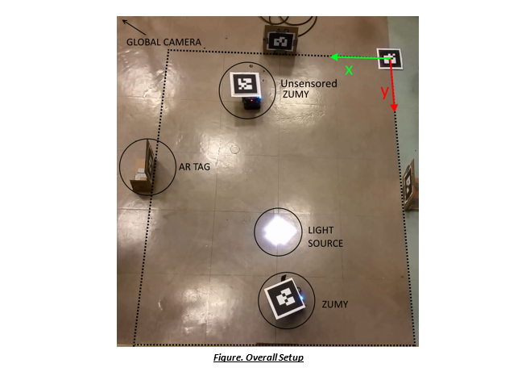
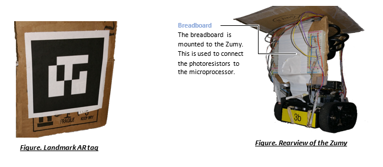
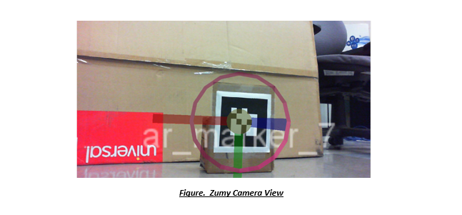
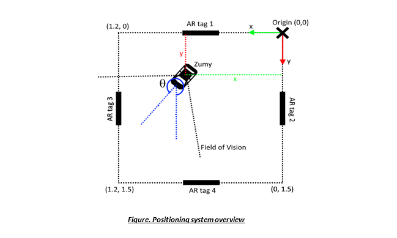

Zumy Light Exploration EE106A Fall 2015 Final Project

"simulating the exploration of an unknown planet"
1. Introduction
The goal of this project is to successfully launch an autonomous network of three Zumies (small mobile robots, as seen above) to explore a surrounding area in search of light. The purpose of searching for light is to recharge the Zumies' solar cells and effectively keep each other running whilst exploring an unknown enviroment. Interesting features of this project are the ROS (Robot Operating System) network that connects, coordinates, and runs the Zumies as well as the light sensing and position tracking components.
Our mission is to one day have the Zumies on another planet, aiding in autonomous planet exploration with the self-sustainable tactic of locating light and communicating to each other the best source of light.
Here is the final video.
2. Design
Simple Terminology
Zumy - a small mobile robot. Relevant features are the Linux OS on the robot to interface with ROS, USB connectors for a camera, a wifi adapater to communicate with a network, pins for analog input, and an internal gyroscope and accelerometer originally meant to communicate with the Kalman filter.
Photoresistor - light sensitive resistor. Has variable resistance that changes with exposure to light
Voltage divider circuit - simple circuit taking advantage of a photoresistor's dynamic resistance to output a variable voltage
Initial Design
in an effort to simulate realistic exploration, our initial design was to mount cameras and four photocells onto each Zumy instead of using a global camera. AR tags placed in the field of exploration would be objects of known positions - landmark AR tags. From these AR tags, a Zumy can determine it's position within the field. Further, when a Zumy does not see an AR tag, and thus cannot determine its position accurately from its camera readings, it would instead use the Kalman Filter, integrating readings from its accelerometer to accurately calculate its position.
In terms of exploring, the three Zumies would explore an equal region in the field and when one of them found a sufficient source of light to charge its solar cells, it would signal to the others to stop searching. The other Zumies would stop searching, and having received the position of its fellow Zumy, they would navigate over to the source of light.
Final Design
The project was an overall successful and the majority of the initial objectives were met – the most notable difference with the initial design is that the Kalman Filter was not implemented. This is because the readings from the accelerometer of the IMU (Inertial Measuring Unit) were found to be unreliable. It was decided that a global camera, overlooking the entire exploration area would be used to simulate the Kalman Filter. Similarly, it would only provide information to the Zumy when the mounted camera could not see an AR tag.
Furthermore, although it was initially planned to use multiple Zumies searching an area for light, only one Zumy was used for photo-detection as there were limited Zumies available in the department. All of the software was designed to allow multiple Zumies to explore and thus it is easy to expand the project to multiple Zumies. A second Zumy, without light sensors or a mounted camera, was added and told to explore to show that once a Zumy discovers a strong enough light source, all exploration Zumies would assemble at this point.
The table below shows the main differences of the final design relative to the initial objectives:
| Achieved | Objective | |
| Positioning System | 4 Landmark AR tags Mounted Camera Global Camera |
Landmark AR tags Mounted Cameras Kalman Filter |
| Light Sensing | 1 Zumy with 4 light sensors | Each Zumy has light sensors |
| Exploration | Split region between 2 Zumies | Split region between Zumies |
The photograph below shows the final setup which was used for the project. It should be noted that the global camera cannot be seen but is overlooking the exploration region. Of further note is that the region is split equally in two parts between the Zumies. The top part is explored by the un-sensorised whilst the lower part is explored by the Zumy with sensors. A patch of bright light was added so that the Zumies stop exploring once one of them has been found it.

Zumy Setup
The Zumy was modfied in order to attach light sensors, an AR tag, and a camera. These modifications are shown in the figures below.


The four photoresistors used to detect light were connected to the Analog inputs pins on the Zumy’s microprocessor via a breadboard as shown in the figure below.

Design Criteria
The final design choices meet several design criteria relatively well and others not so well. For example, our system is not entirely robust. The code is heavily dependant on the existing ROS software but if any node, other than the Zumy node, crashes, the entire system will hang. There is one point of robustness and this is if the Zumy does not see an AR tag, the global camera will still capture its position.
Despite this setback, our design is clean and efficient. We had the explorer node (covered in more detail below) assign sections of exploration so the Zumies do not overlap in their exploration regions and search the same areas twice. The intent was to find light to charge the Zumies, so having them conserve energy while looking for places to charge is an issue our design addresses. Further, our design is easily expandable because the code is modulized. Thus, changing the number of exploring Zumies or changing the exploration algorithm is easy to locate and accomplish. We can further adapt the controller node (also discussed in more detail below) to send different information to our explorer node for better feedback.
Some of the design criteria that we fail to meet in a real-world robotics setting is due to the fact that our system is built largely from existing implementation, namely ROS. For example, problems such as recovering from crashes in ROS is not something we have knowledge of.
Ultimately, we believe we did well to meet design criteria that we did have control of.
3. Implementation
Positioning System
The final positioning system consisted of using the camera mounted on the Zumy as well as a global camera overlooking the region to be explored. The global camera is only used to update the position of the Zumy when no landmark AR tags are in the field of view of the mounted camera – as previously mentioned, this is done to simulate the Kalman filter.
The state of the Zumy can be described using 3 different parameters: the x coordinate, the y coordinate, and the orientation denoted by theta. All parameters are measured relative to the origin as shown in the figure below – therefore a positive theta is measured from the positive y-axis for a positive rotation around the z-axis.
The following sections discuss how each of these methods are used to estimate the positions of the Zumy.
Mounted Camera
As seen in the figure below, the mounted camera is used to calculate the transform from the Zumy to the Landmark AR tag. As the AR tags are placed at known positions and orientations around the region to be explored, it is possible to estimate the Zumy’s position. Each time the Zumy sees one of these AR tags, it calculates (using forward kinematics) the transform from the origin to itself and thus, both the position and orientation of the Zumy, relative to the origin, can be inferred.

The figure below shows the case where the Zumy is facing AR tag 3. The position can then be easily calculated using the formula below because the transform from the origin to the AR tag is known and the Zumy’s camera can measure the transform the Zumy to the AR tag.
To calculate the orientation of the Zumy, a simple addition or subtraction from the angle measured by the mounted camera is required (the amount to add or subtract depends on which AR is in view) – this is so that theta is measured anti-clockwise from the positive y-axis of the origin.

Global Camera
The position and orientation of the Zumy relative to the origin can easily be calculated using the AR tag located on the Zumy and the AR tag located at the origin. The transform from the origin to the Zumy can be calculated using the following below.
The orientation of the Zumy can be extracted from the transform from the origin to the Zumy.
Motion and Exploration
Another important section in this project was the exploration phase. The main goals consisted of telling the Zumy to move to certain locations within the exploration region and measuring the local light intensity as it navigates.
The first step was to tell the Zumy to move from one point within our region to another. The figure below shows the case where the Zumy starts off at point A with orientation theta and needs to move towards point B. The flow chart below illustrates the algorithm which controls how the Zumy moves from point A to point B. θd is the angle which the Zumy must face within a certain bound to move forward, as illustrated in the figure below - it can easily be calculated using simple trigonometry.

Essentially, the Zumy is told to rotate until it is facing the desired location within a certain bound. The Zumy will then proceed to move forward and continuously makes small adjustments in its orientation in order to advance in the correct direction, until it reaches its target location. The software was written such that the Zumy always rotates in the direction closest to the desired orientation.
The video below shows a test in which the Zumy is told to move from one location to another.
The next stage is to split the exploration region between the two Zumies and have one move towards the other when a moving average of the light readings exceeds a certain threshold value. After calibrating the sensors, the readings from each photo sensor ranged from around 0.2 in the darkness up to 1.0 in high light intensity. A threshold value of 0.7 seemed to produce reasonable results. Since the region to be explored was rather small, each Zumy was assigned to half the total area and each would explore its area randomly as shown in the video below.
System Architecture
Our software is primarily constructed from ROS packages and consists of topics, nodes, and services. All of the programs we wrote were written in Python.
Topics
The following are the ROS topics that publish our system information.
- zumyxx/photo
Message Published: Float32MultiArray [found in std_msgs]
- The 'xx' in the topic refers to the respective Zumy. For example, zumy3b/photo is photo data published by Zumy3b. The required files to upload onto the Zumy (zumy.py and zumy_ros_bridge.py) can be found in section 7, Additional Materials.
- Float32MultiArray is a complex data structure, consisting of two data types. The first is layout (called through Float32MultiArray.layout), specifing the layout of the data of the array. The second is data (called through Float32MultiArray.data), which contains the actual float array. The format of this float array, for our purposes, is a four-element list of floats. Each float represents the analog value read from each photo resistor on the zumy. - tf
Message Published: TFMessage [found in tf2_msgs]
- There are a variety of nodes that publish onto this topic.
- The first nodes are usb_cam_zumyxx. Once again, "xx" denotes the correspoding Zumy. Thus a TFMessage from usb_cam_zumy3b is a TFMessage from Zumy3b's camera readings.
- The other node that publishes to the tf topic is the global camera. The Transform encapsulated in it's TFMessage is the Transform between the origin tag to the Zumy's tag in the field.
- TFMessage is also another complex message type. The fields to pay close attention to are its TFMessage.transforms[0].child_frame_id, which contains the publishing node (usb_cam or usb_cam_zumyxx) and TFMessage.transforms[0].transform, which contains the Transform. - zumyxx_cmd_vel
Message Published: Twist [found in geometry_msgs]
- Publishing a Twist to zumyxx_cmd_vel makes the Zumy move.
- Of key note are that the Zumy cannot move sideways, and thus, only values written to Twist.linear.x (forward speed) and Twist.angular.z (rotation speed) are understood by the Zumy.
Nodes
Although there are many nodes present in our system, such as the camera nodes and service
nodes, one of these nodes requires greater explanation and is outlined below.
- Controller
- Each Zumy in the system has its own controller node. This controller is responsible for interfacing with all other nodes and services. Services are explained below.
- Of key note is that this controller node grabs all of the information, specifically the photo data readings and the Zumy's current position, sends this to an Explorer Service, receives back the position it should make the Zumy go to, and finally, calculates and publishes the correct twist to the Zumy.
Services
The following are the services that enable our system information exchange and essentially run the system.
Services are unique because unlike topics, information is not continuously published. The exchange occurs when a service request is prompted and a service response follows. An analogy is that services are similar to a handshake between nodes.
The services below indicate the side that initiates first and which effectively sends the request.
- tf_service - Controller Initiated
Service Request: string zumy
Service Response: bool updated, float32 theta, float32[] position
- The purpose of this service is to tell the Controller its Zumy's current position and rotation in the area. The service request states for which Zumy this request is for and is a string (string zumy). The response is an updated flag, the rotation the Zumy currently makes with the +Y-axis, and the Zumy's position in a two-element float array.
- The tf_service is able to calculate the Zumy's position by listening on the tf topic. Because it is capable of looking from where the TFMessage is published (usb_cam or usb_cam_zumyxx), the tf_service follows the procedure outlined in the "Mounted Camera" section above, turning the transform into the correct theta and position, stores it in it's own internal dictionary, where the Zumy is the key, and when prompted, returns this position and theta to the correct Zumy response.
- The update flag is used to indicate to the Controller that the information the Controller is currently receiving from the tf_service is new information. In the case when the information is stale (because the Zumy's camera no longer sees a landmark AR tag), the Controller will ask the global_serivce for the Zumy's position. - global_service - Controller Initiated
Service Request: string zumy
Service Response: bool updated, float32 theta, float32[] position
- The global_service works similarly to the tf_service. It listens for tf's on the tf topic from the global camera (usb_cam), and through the method outlined in the "Global Camera" section above, it computes the Zumy's position and theta.
- Similar to the tf_service, it stores these values in a dictionary, where the Zumy string name is the key, and returns to the Controller the Zumy's position and rotation through the same service request and response. - explore_service - Controller Initiated
Service Request: string zumy, float32[] position, float32[] photo_data, bool finished
Service Response: float32[] position, bool hard_stop
- The explore_service is the brain of the system. All Controllers message the explore_service with their Zumy's position and photo data, and the explore_service calculates the desired positions the Zumy's should explore.
- In its response, it tells the Zumy whether it should keep exploring by sending it to a new position or by keeping it still at its current position. When a Zumy's photo data reaches over the necessary light threshold, the explore_service tells that Zumy to stop and messages the other Zumy the position of that Zumy.
- Furthermore, this service can issue a hard_stop to Zumies, which tells a Zumy to stop moving. Because it knows the positions of all of the Zumies, it can tell them to hard_stop when they would collide and lets one of them go.
It is truly the brain of the operation.
Launch Files
The following are the launch files that are launched to begin running our system.
- run_all.launch
This launch file is used to launch the global camera. It sits in the tfservice package. - remote_zumy.launch
This launch file is used to launch the zumy. It sits in the odroid_machine package.
System Architecture Visual
The following is a visual of the topics, nodes, and services in our system architecture.
Legend
Black arrows denote topics.
Nodes are circled.
Red arrows denote service exchanges.
4. Results
The project was a success. We managed to get 1 Zumy to explore an area marked out with Landmark AR tags and an overlooking global camera as well as measure levels of light intensity as it explores. When the Zumy records a level of light above a certain threshold, it stops and tells the other Zumies to join it.
We only had 1 sensorized Zumy and 1 unsensorized Zumy simply because it meant that we had to modifiy the hardware on another Zumy extensively and would further render this Zumy unusable to other groups.
The code and system architecture is also established in a maner that allows easy modification and expansion.
The video below shows the final result of the project. It is the same video at the top of the web page.
5. Conclusion
Summary
The goal of this project was to have Zumies explore an area to find light and signal to other Zumies to go to it. Our system accomplishes this goal. There were a few problems, such as the Kalman Filter, that lead to deviations from our original plan, but ultimately, our system is modulized in a way that makes it relatively simple to switch out the alterations. There is definitely room for improvement and there are others ways to use it beyond its original functionality. One of the most prominent is using the Zumies to carry plants to well-lit areas throughout the day and to possibly carry these plants on other planets.
Initial Designs, Problems, and Fixes
At the start of our project, we had an overall goal, a general approach of how to reach it, and the tools to implement it. However, along the way, we ran into multiple problems. To solve them, we had to make changes to our original design to get around to our final goal. The changes are outlined in greater detail in the table below.
| Original Design and Problem | Temporary Fix | More Permanent/Desirable Solution |
| Use the IMU service to estimate position. However, the Kalman Filter, based off accelerometer readings, was not very accurate, making position tracking difficult. | Used a global camera. We required an AR tag on each Zumy as well as an origin tag. | - Improved filter, accelerometer, and gyroscope - Use wheel encoders to estimate distance |
| Originally planned to not use an origin AR tag with the global camera and instead use a Landmark AR tag for reference. Camera difficulties with angles and RVIZ displays lead to poor, fluctuating readings. | AR tag at the origin as the primary reference for the global camera and the second Zumy required a mounted AR tag. | Solutions similar to the above. |
| Use 3 Zumies. Lack of available dedicated Zumies made it difficult to secure 3 to setup sensors on. | Used 2 Zumies, one with light sensors be the one to "find" the light and one without. | Current code can easily be expanded to account for more Zumies and setting up more light sensors on another Zumy requires medium overhead. |
Future Improvements
- Combine all services into one package that takes all the information around the system, parses through all of it, and simply issues each Zumy a twist.
- Implement more permanent solutions, i.e. remove the global camera and use the Kalman Filter.
- Eliminate the use of AR tags by simply using image detection algorithms and by only using the cameras on the Zumies.
- Improve the exploration algorithm. The current exploration is random and this is not desirable for bigger areas of exploration.
- Add obstacles and implement obstacle avoidance. However, the obstacles must require AR tags. Implementing an image detection algorithm would solve all of these problems.
- Go up the light gradient. Instead of stopping once the light sensor detects a certain threshold, lower the threshold and have the Zumies detect lower thresholds and move up a gradient to find brighter areas. This allows us to better find distant light sources.
- Land on Mars.
6. Team

Hover over a picture to read a bio!
7. Additional Materials
Code
Freely available for anyone to use. Simply download project_code.zip and zumy_code.zip.
Link to github.
project_code.zip contains the project files to launch the global camera, Zumies, and services.
zumy_code.zip contains the Zumy code to put on to the Zumy. Contained are zumy.py and zumy_ros_bridge.py
How to Run Guide
- Download the code from the section above.
- Unzip the zip files.
- Go to ros_workspaces/project/src/tfservice/launch and change the directory in the lifecam.yml in your machine.
- cd into the ros_workspaces/project and remove the build and devel folders. Run 'catkin_make'. Remember to source the setup.bash file in this directory.
- I will denote 'zumyaa' as the first Zumy and 'zumybb' as the second Zumy. Also 'x' is the width of your area divided by 2, and 'y' is the height of your area divided by 2.
- Launch the global camera by running 'roslaunch tfservice run_all.launch.' Launch the 2 Zumies by running 'roslaunch odroid_machine remote_zumy1.launch mname:=zumyaa' and 'roslaunch odroid_machine remote_zumy2.launch mname:=zumybb'. The remote_zumy1.launch is for the sensorized Zumy. The second is for the unsensorized Zumy.
- Begin the tf_service by running in a new terminal, 'rosrun tfservice tf_srv.py zumyaa zumybb x y'.
- Run the global_service by running in a new terminal, 'rosrun tfservice global_srv.py zumyaa AR_tag_on_zumyaa zumybb AR_tag_on_zumybb AR_tag_at_origin'.
- Run the explore_service by running in a new terminal, 'rosrun tfservice explore_srv.py front_threshold_value back_threshold_value x y'.
- Start the controller on zumyaa by running 'rosrun controller.py zumyaa explore1'.
- Start the controller on zumybb by running 'rosrun controller.py zumybb explore2'.
- Now watch the Zumies search for light!
Photocells
Link to Adafruit.